Liberação de dados pelo custodiante
A rotina de fechamento do D-2 se inicia com o e-mail de aviso da liberação das informações pelo custodiante, cujo assunto é "LIBERAÇÃO CERES - DATA", que faz referência à data disponibilizada dessas informações. A partir dessa sinalização, inicia-se a etapa de download dos arquivos das carteiras diárias, dos demonstrativos de caixa e dos arquivos .xml dos planos de benefícios e dos fundos da Ceres, no site do Bradesco.
Todos os relatórios são obtidos da aba Custódia e Controladoria de Ativos e requerem a escolha de um grupo de carteiras. Caso ainda não exista um grupo de carteiras configurado em seu usuário, acesse Relatórios > Cadastro de Grupo de Carteiras. Clique em Novo, e depois em "Selecionar Todas as Carteiras/Fundos" e, por fim, defina um nome para o grupo.
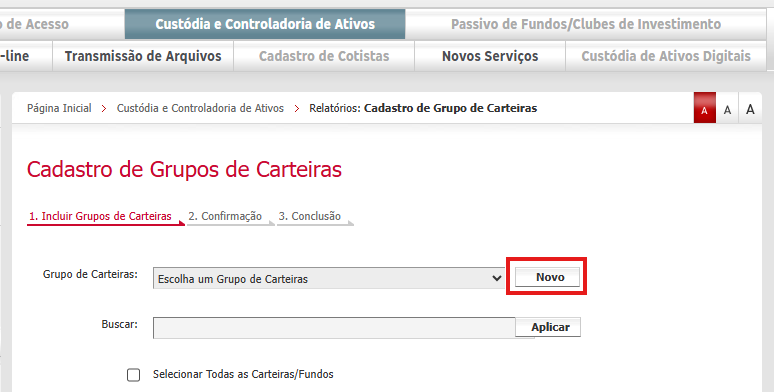
Obter as informações do custodiante
Para todos os arquivos a serem baixados, o Grupo de Carteiras será composto por todas as carteiras e fundos da Ceres, conforme criado acima. Em cada etapa, para selecionar o grupo desejado, clique no botão de lupa e, na janela que abrir, em Pesquisar para visualizar os grupos de carteira criados e selecionar o desejado.
Carteira diária
Acessada em Custódia e Controladoria de Ativos > Relatórios > Posição > Carteira Diária. Marque apenas a opção XLS, sendo que a Data Inicial é referente ao dia de conciliação. O download dessas carteiras deve ser feito individualmente, para cada dia que foi liberado pelo custodiante.
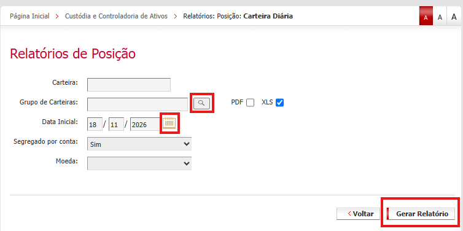
Demonstrativo de Caixa
Acessado em Custódia e Controladoria de Ativos > Relatórios > Movimentação > Demonstrativo de Caixa. Marque apenas a opção XLS, sendo que a Data Inicial é o primeiro dia do mês em exercício e a Data Final é o último dia de liberação. Para esses relatórios, não há necessidade de gerar o relatório individual.
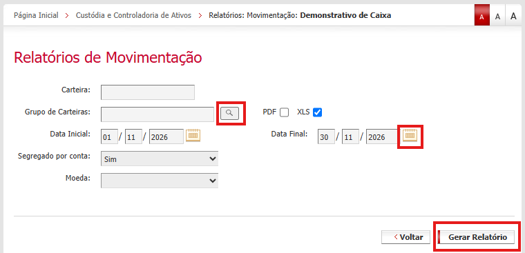
XML Anbima
Acessado em Custódia e Controladoria de Ativos > Relatórios > XML Anbima. A Data de Posição é referente ao dia de conciliação. O download desses arquivos deve ser feito individualmente, para cada dia que foi liberado pelo custodiante.
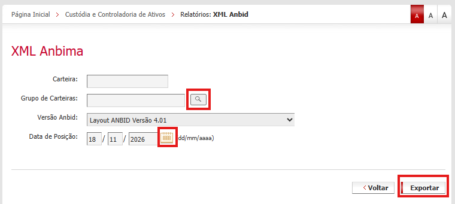
Download dos relatórios
Os relatórios gerados são obtidos em Custódia e Controladoria de Ativos > Relatórios > Extração de Arquivos (Book / Grupo de Carteiras) > Protocolo de Book e Grupo de Carteiras > Consultar. Observe o número do protocolo para saber qual arquivo é referente à carteira diária, ao demonstrativo de caixa e ao XML Anbima: a numeração segue a ordem em que os relatórios foram gerados.
Salvar os arquivos nos diretórios do Mitra
Acesse a VPN do Mitra e salve os relatórios gerados em suas respectivas pastas, cujos diretórios estão parametrizados e são acessados pelo Mitra para obter as informações necessárias (pelos arquivos XML, enquanto as carteiras diárias e demonstrativos de caixa são salvos para referência gerencial). É preciso criar uma pasta para cada dia de conciliação, seguindo o padrão já existente:
- Carteiras diárias:
D:/LUZ Soluções Financeiras/ARQUIVOS INTEGRAÇÃO/CARTEIRA DIARIA- criar uma pasta para cada dia (padrão DDMM) - Demonstrativos de caixa:
D:/LUZ Soluções Financeiras/ARQUIVOS INTEGRAÇÃO/CARTEIRA DIARIA- criar uma pasta com data referente à data final escolhida para a geração deste relatório (padrão D.CAIXA DD MÊS) - XML Anbima:
D:/LUZ Soluções Financeiras/ARQUIVOS INTEGRAÇÃO/FUNDOS RECON
No caso dos arquivos XML, salve o arquivo zip na pasta do dia de conciliação, extraia todos os arquivos, copie todos os XML com exceção do arquivo referente a CERES CONSOLIDADA e cole os arquivos na pasta FUNDOS RECON.
Os arquivos .xml que estiverem presentes nesta pasta serão considerados na etapa de integração do Mitra (quando o sistema lê os arquivos e obtém as informações do XML), por isso é importante ter cuidado com quais arquivos permanecem nessa pasta. Em caso de integração duplicada para o mesmo dia, consulte a aba de Resolução de problemas.
Obter cotas FII
As cotas diárias do FII RB CAPITAL DESENV RESIDENCIAL II são calculadas à parte e incluídas manualmente pelo Mitra Web:
- Copie todos os XML referentes aos planos de benefícios da pasta Fundos Recon para a pasta
D:/LUZ Soluções Financeiras/ARQUIVOS INTEGRAÇÃO/PU/PU PLANOS/XMLS. Caso existam arquivos XML na pasta, exclua-os. - Na pasta PU PLANOS, execute o atalho
IMPORTACAO_PLANOS, que gera um arquivo excel com as cotas do FII. - Copie as células com informações, acesse o Mitra Web, cole os dados, clique em Validar e em Salvar.
- Aguarde o e-mail de confirmação da inclusão das cotas.
ATENÇÃO: Caso ocorra o reprocessamento dos arquivos liberados, basta incluir a cota recalculada para a mesma data, pois o Mitra sobrescreve com a cota registrada mais recente para cada dia.
Etapas do Mitra
Integrar as boletas
A integração das boletas que entram por meio dos lançamentos no módulo de front do Mitra deve ser feita para que as boletas lançadas e aprovadas sejam integradas no módulo de MiddleOffice, de forma que essas informações também passem a alimentar o banco de dados do sistema, que será utilizado para os cálculos de fechamento.
- Iniciar o Mitra Produção.
- Na aba Front, selecionar Integrações > Integrar Boletas Front to Back.
- Antes de clicar em Integrar, aparecem "Boletas para integrar: x" e "Boletas integradas: -".
- Após clicar em Integrar, aparecem "Boletas para integrar: x" e "Boletas integradas: x".
- É necessário clicar em Integrar mais uma vez, para aparecer "Boletas para integrar: x" e "Boletas integradas: 0".
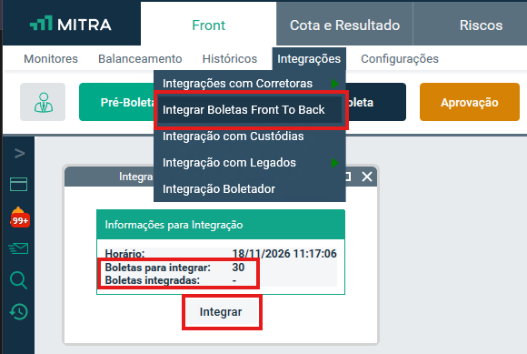
Replicar os dados
O funcionamento interno do Mitra é dado pela captação de informações de diversas fontes de dados para uma base chamada lef_series. Após o tratamento desses dados, as informações passam a integrar uma base chamada LEF Risco 2000, que alimenta as bases dos clientes da Luz.
A etapa de replicação de dados é equivalente a uma atualização dessa base consolidada, de forma a executar as rotinas com as informações mais atualizadas disponíveis. Essa etapa também é necessária para atualizar a base com quaisquer registros de cotas feitos pelo Mitra Web.
Após receber o e-mail de confirmação de inserção dos dados no Mitra Web:
- No canto superior direito do Mitra, clicar no botão de Replicação de Dados ().
- Clique em Replicar Preços na janela que abrir.
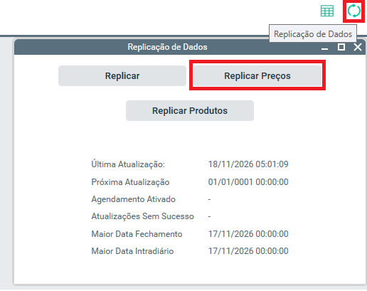
Integrar os arquivos XML na base de dados do Mitra
Nessa etapa, as informações fornecidas pelo custodiante são integradas para a base de dados do Mitra para a realização do batimento das posições entre o Mitra e o Bradesco.
- No canto superior direito, clique em Cadastros Gerais (
 ) > Integrações > Monitor Pipeline.
) > Integrações > Monitor Pipeline. - Selecione o pipeline "Integração D-2" e clique em Calcular.
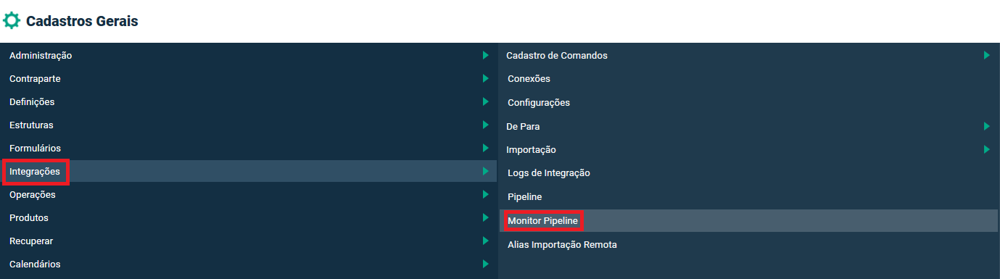
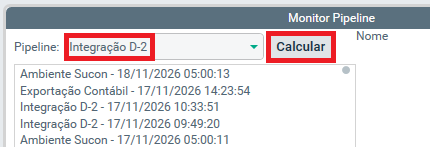
Calcular as posições
- Clique na aba de Cota e Resultado para expandir a lista de programas no botão
>na barra lateral esquerda. - Selecione o programa [RECON] FUNDAÇÃO CERES clicando duas vezes.
- Na parte de programas selecionados, clique com o botão direito no programa > Definições > Apuração > Geral para definir as datas de cálculo: Data final = dia de cálculo da conciliação e Data inicial = dia útil anterior à data final.
Esse cálculo deve ser feito dia a dia para conferência e fechamento.
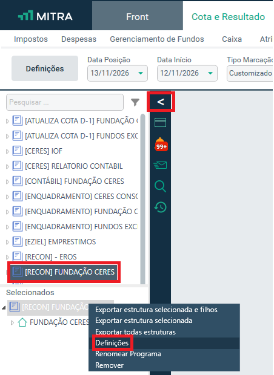
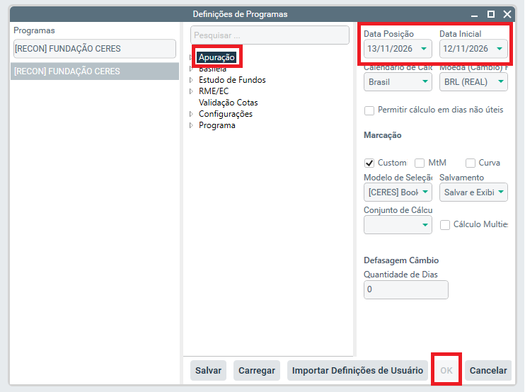
Conferir a conciliação
- Finalizado o cálculo, abrir o Book Preços Consolidado.
- Filtrar a coluna Produto, selecionando todos e retirando aqueles que são referentes a empréstimos, financiamentos, imóveis, PL e Caixa.
- Verificar nas colunas de Diferença se houve alguma divergência.
- Em seguida, selecionar apenas o produto Caixa e verificar se houve alguma divergência.
Na coluna do Financeiro com os produtos selecionados, é normal dar uma diferença em torno de R$ 5 mil, devido à diferença de precificação das NTN-B e NTN-C entre as metodologias do custodiante e do Mitra.
Em caso de divergências que não relacionadas a precificação de NTN-B, consultar a página de Resolução de problemas.
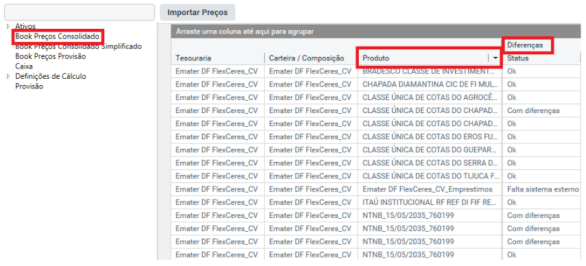
Gerar e enviar os dados contábeis
Após conferir a conciliação e não observar diferenças entre o Mitra e o custodiante, ou identificar apenas diferenças mapeadas (como a precificação de títulos públicos, ou diferenças de centavos de caixa), é necessário gerar os dados contábeis para disponibilizá-los para a GCONT.
- Desselecionar o programa [RECON] FUNDAÇÃO CERES clicando duas vezes.
- Selecionar o programa [CONTÁBIL] FUNDAÇÃO CERES.
- Clicar com o botão direito no programa selecionado, como foi feito em [RECON] FUNDAÇÃO CERES > Definições > Apuração > Geral e selecionar a Data final = data da última conciliação e Data inicial = último dia útil antes da primeira data a ser calculada. Por exemplo, para calcular dos dias 10/11/2026 a 13/11/2026, a data inicial será 09/11/2026.
- Após a finalização do cálculo, clicar em Salvar > Travar Dados Contábeis
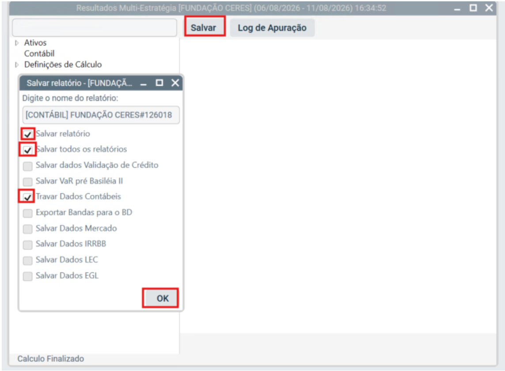
Para exportar os dados para a contabilidade: Cadastros Gerais (
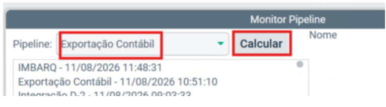
Disponibilizar o saldo de caixa para a Contabilidade
Após realizar a conciliação, gerar os dados contábeis e exportar para a GCONT, também é necessário disponibilizar, no drive compartilhdo, o saldo de caixa dos planos.
- Abrir o Mitra Relatórios Produção.
- Fechar todas as planilhas excel que estiverem abertas.
- No diretório D:/LUZ Soluções Financeiras/ARQUIVOS INTEGRAÇÃO/SALDOS DE CAIXA, abrir a planilha
SALDO CAIXA CUSTÓDIA - MODELO.xlsx. - Selecionar a aba Mitra > Gerar relatório > na janela de navegação que abrir à direita, clicar em Gerar relatório novamente > escolher as datas: Data inicial = primeiro dia do mês e Data final = último dia de conciliação > Clicar em Ok.
- Será aberta outra planilha, que deve ser salva na mesma pasta seguindo o modelo
CAIXA_DD_MM_AAAA.xlsx. - Copiar a planilha para a pasta compartilhada com a contabilidade:
G:/Drives compartilhados/GECOR_GCONT/RELATORIO DE FECHAMENTO_GEMOI_MITRA.
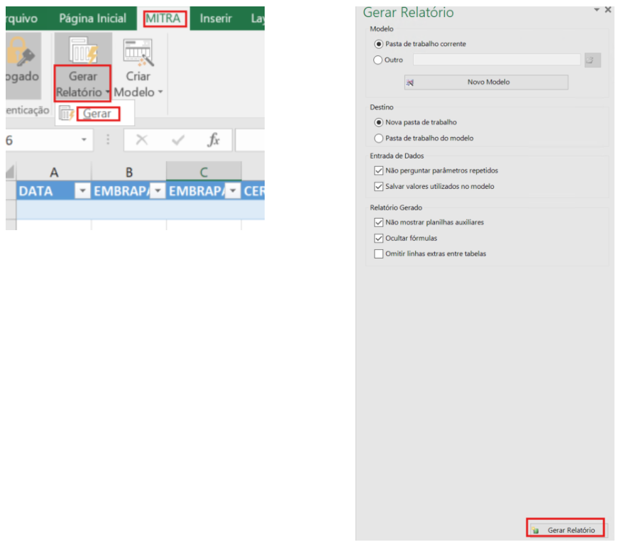
Conciliar os fundos exclusivos
Junto com o fechamento diário, também fazemos a conciliação dos fundos exclusivos de gestão própria da Ceres: FIA Agrociência e FIM Eros.
Cada fundo deve ser conciliado individualmente.
- Selecionar a carteira do fundo na barra lateral esquerda, dentro de FUNDOS EXCLUSIVOS, clicando duas vezes.
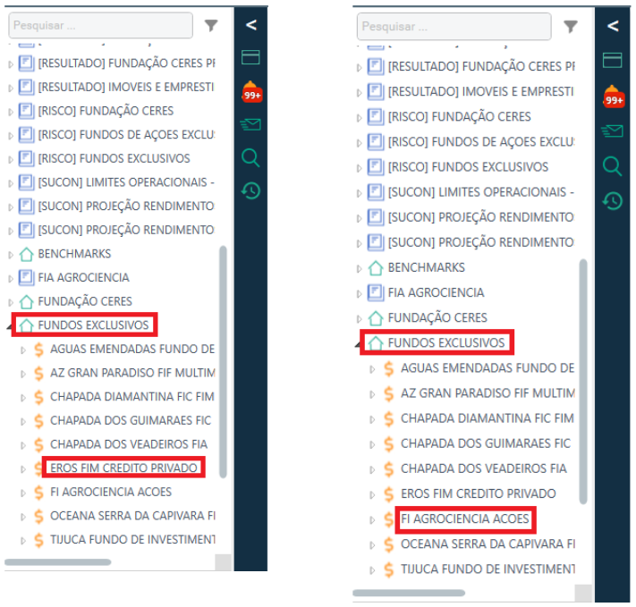
2. Na barra de Definições, selecionar Data Posição = dia de conciliação e Data Início = dia útil anterior à data de conciliação, e calcular.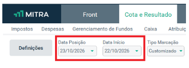
Eros
Ao fim do cálculo, abrir o Book Preços Consolidado. No caso desse fundo, é necessário fazer a Importação de preços, para que os preços e as cotas do fundo sejam atualizados para o padrão da Anbima no Mitra.
Caso hajam diferenças de quantidade, buscar pela solução na página de Resolução de problemas.
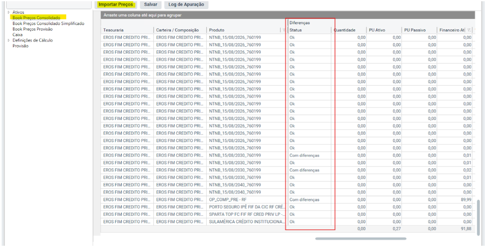
Agro
Para a conciliação do FIA Agrociência Ações, é necessário obter o arquivo IMBARQ06 do site iMercado da B3 e fazer a integração no Mitra:
- Acessar o site e, após a autenticação por código enviado por e-mail, selecionar Participante: 585 e Categoria: FCAO.
- Na barra de navegação superior, selecionar Solicitações > Download de arquivos > Buscar e procurar os arquivos IMBARQ06 para baixar.
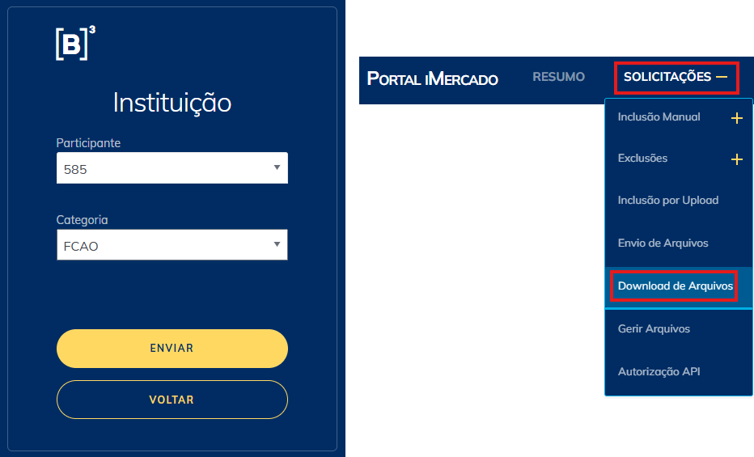
O site usa uma janela móvel de informações, na qual os arquivos ficam disponíveis por oito dias. Conforme novos arquivos são acrescentados, os mais antigos são excluídos, de forma que é importante sempre acessar e fazer o download para evitar perder algum dia.
Importante: deve-se ter atenção para não subir os dados IMBARQ duplicados, pois a correção é complexa.
Após fazer o download do arquivo:
- Salvar o arquivo na VPN do Mitra em
D:/LUZ Soluções Financeiras/ARQUIVOS INTEGRAÇÃO/IMBARQ, de acordo com o ano e mês do arquivo. - Pegar o arquivo
.txtdentro do.zipe colar na pasta IMBARQ. - Realizar a integração individualmente, mesmo que exista mais de um dia para conciliar: no Mitra, Cadastros Gerais () > Integrações > Monitor Pipeline > selecionar o pipeline IMBARQ > Calcular.
É de costume deixar o último arquivo IMBARQ integrado na pasta IMBARQ, para facilitar o controle dos arquivos que já foram integrados no Mitra e evitar o erro de duplicidade das informações.
A conciliação do FIA Agro segue os mesmos passos que a do Eros, com exceção da Importação de Preços. No caso do Agro, deve-se observar as diferenças geradas pelo BOVA11 e BOVV11, além do Caixa.
Na ocasião de haver diferenças na quantidade, é possível que o arquivo IMBARQ da data calculada não tenha sido integrado ao Mitra ainda.
Comunicar no chat D-2
Ao concluir a rotina, é necessário comunicar no grupo de chat D-2 que os movimentos do dia conciliado foram exportados. A GCONT dará prosseguimento, então, às checagens das informações enviadas pelo sistema e pela GEFIN, realizando o respectivo batimento.
Após a GCONT enviar a tela com o batimento das informações, caso haja alguma divergência superior às diferenças de centavos, será necessário fazer a devida verificação. Não havendo diferenças, a rotina de conciliação do dia está concluída.